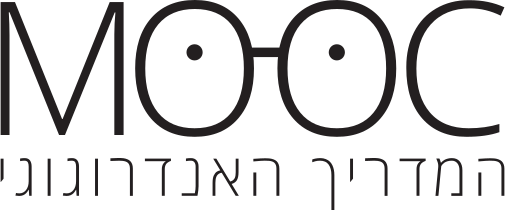

אתר המשמש כלי עזר לפיתוח MOOC
פרויקט גמר, תש"פ
צוות הפרויקט:
חלי בל ויובל זהר
מנחות:
ד"ר חגית מישר-טל ורעות בכר
בשיתוף עם מכון מופ"ת
נציגי הארגון: דורין עמר פסט, רותי סולומון
ואסף עמית
למידה בדרך של פתרון בעיות היא תהליך למידה הבסיסי המאפיין בני אדם ומאפשר להם את לשרוד בסביבתם. פתרון בעיות הוא חיוני לתפקוד מוצלח בעידן המידע והתקשורת שבו אנו חיים.
פתרון בעיות הוא תהליך מורכב, שניתן לאפיינו באמצעות מודל הבנוי מארבעה אשכולות של מיומנויות, שהשילוב ביניהם תורם להשגת המטרה.
.
4 מיומנויות
פתרון בעיות
הבנת והגדרת הבעיה
העלאת רעיונות לפיתרון
תכנון דרכי פיתרון
הערכה / חקירה / ביצוע
מטרה
למידה בדרך של פתרון בעיות היא תהליך למידה הבסיסי המאפיין בני אדם ומאפשר להם את לשרוד בסביבתם. פתרון בעיות הוא חיוני לתפקוד מוצלח בעידן המידע והתקשורת שבו אנו חיים.
שלושת האשכולות ההיקפיים מוצגים במסלול שמצביע על מגמת ההתקדמות, אך בעיקרון מדובר בתהליך רשתי.
.
הבנת והגדרת הבעיה
הערכה / חקירה / ביצוע
תכנון דרכי פיתרון
העלאת רעיונות לפיתרון
2
העלאת רעיונות לפתרון הבעיה
השלם את המשפט באמצעות בחירת התשובה הנכונה:
בעת העלאת רעיון, הייתי משתמש ב
לעומת זאת, בעת הערכת רעיון, הייתי משתמש ב
קישור למאמר המקורי